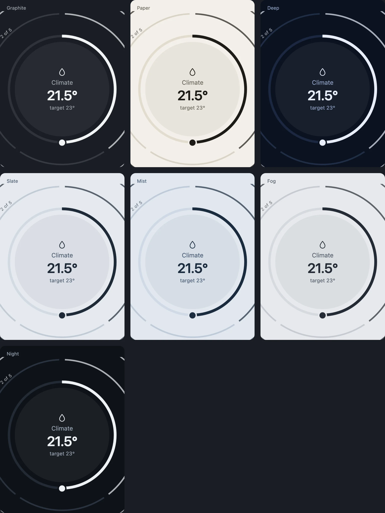

In use
In your project
To use Pulse with your own data, describe your systems and write a host adapter that supplies readings and runs actions. Then mount the board on your page. Every host built so far followed the same steps; this guide walks them with a machine as the example.
1. Install and import
The core is @zumer/pulse; Orbit and Zumly are its peer dependencies, so that an app with its own copies does not get two. npm installs them along with it, but your app imports them itself, so name them: npm install @zumer/pulse @zumer/orbit zumly. Three stylesheets and two runtimes (the core brings Zumly's), then the board.
import 'zumly/style.css';
import '@zumer/orbit/style';
import '@zumer/orbit';
import '@zumer/pulse/style.css';
import { mountBoard, type PulseHost, type Reading } from '@zumer/pulse';The core is an ES module with bare imports, so it goes through a bundler; the examples here use Vite. In TypeScript the stylesheet imports need a declaration: with Vite, add "types": ["vite/client"] to the compilerOptions of your tsconfig.json, or tsc reports that it cannot find zumly/style.css. The core runs in the browser only: it reads the page as it loads, so under server rendering import it on the client.
The page needs one element to mount on: a shell that fills the viewport and the Zumly canvas inside it.
<div class="shell"><div id="canvas" class="zumly-canvas"></div></div>2. Describe your systems
A system is a title and a few channels. A channel has a key, a name, a glyph, and a function that reads your state into a Reading, or returns nothing when there is nothing to read: a machine without a battery has no battery ring, and nobody writes that down. Two to four channels that compete for attention make a good system; more than that is usually two systems.
const compute = { id: 'compute', title: 'Compute', channels: [
{ key: 'load', name: 'CPU', glyph: chip, read: (s) => {
const th = s.get('cpu.load');
if (!th) return null; // not on this machine: no ring
const load = th.state;
return { kind: 'p', v: load / 100, big: `${num(load, 0)}%`, label: `${th.attrs.cores} cores`,
ids: ['cpu.load'], // what the reading depends on
history: 'cpu.load', // worth a day as a ring in the detail
alert: load >= 90 ? { level: 1, big: `${num(load, 0)}%`, label: 'CPU',
why: `CPU at ${num(load, 0)}%`, verb: 'Got it', acts: [] } : undefined };
} },
{ key: 'containers', name: 'Containers', glyph: box, read: (s) => {
const all = [...s.values()].filter((th) => th.id.startsWith('docker.'));
if (!all.length) return null;
return { kind: 's', ids: all.map((c) => c.id), big: `${all.filter(running).length} of ${all.length}`, label: 'running',
segs: all.map((c) => ({ label: c.name, on: running(c), id: c.id,
act: { ids: [c.id], kind: running(c) ? 'docker.stop' : 'docker.start', name: c.name } })) };
} },
] };A reading is one of three rings: 'p' a band (v from 0 to 1; with a dial it is dragged, with a range it has two knobs), 's' switches (segs, each with its action), 'c' a choice (one segment on, the names along the ring). Then the face: big and label. Then ids, the things it depends on: the board uses them to beat while an action is on its way and to log what changed. An alert has a level (1 minor, 2 critical), why it calls, the verb, and the actions that resolve it; with no actions, the verb only marks it as seen. What a detail may draw is named the same way: history for a day of a number, tracks for a day of several things, image (with a video it plays), color, month, list. Around the face: a bearing is an arrow on the ring (a heading, where the wind comes from), plots are a radar of things around a point, a globe or a map make the disc the Earth or a window on a tiled map; to names the object the face opens instead of a detail, link a way out to the thing elsewhere. A channel with none of them has no detail: the ring is where it is operated.
3. The host
The board reads everything through one interface, PulseHost: the systems, when things change, how to run an action, and the words for a thing. Every thing is an opaque id; the host names it.
| Member | What it is |
|---|---|
systems | The systems above, with their channels bound to your state |
status, error, hasData, onStatus(fn) | Connecting, live, offline, error; the board says so |
onChange(fn) | Called with the ids that changed, and whether each change is worth a line in the log |
onStructure(fn) | Optional: called when the systems themselves changed (a thing added, a group renamed), so the board rebuilds |
act(action) | Runs an action; resolves when accepted, rejects when refused |
nameOf(id), stateOf(id) | A thing's name and its state as text, for the log and the detail |
changedAt(id), unitOf(id), whereIs(id) | Optional: when it last changed, its unit, where it is |
history(id, hours), changes(ids, hours) | Optional: hourly means for the day ring; state changes for the timeline |
url(path) | Where a picture or a stream lives: a path of the source made absolute |
stream(id), statistics(id, days) | Optional: a live picture, a value per day for the month |
groups(), byGroup(…) | Optional: groups the gear can filter by, and the board's second axis, one object per group |
objectOf(id) | Optional: the object of one thing a row names (to on a segment), zoomed into from the row: an aircraft, a quake |
language | Optional: the viewer's language, for numbers and times |
A host is short. This one, over a machine read by a small collector, binds the channels to the collector's things and answers the rest from them:
export function hostOf(src: MachineSource): PulseHost {
return {
get status() { return src.status; },
get error() { return src.error; },
get hasData() { return src.things.size > 0; },
systems: systems.map((sys) => ({ ...sys, channels: sys.channels.map((ch) => ({ ...ch, read: () => ch.read(src.things) })) })),
onChange: (fn) => src.onChange((things) => fn(things.map((th) => ({ id: th.id, logged: typeof th.state !== 'number' })))),
onStatus: (fn) => src.onStatus(fn),
act: (a) => src.act(a),
nameOf: (id) => src.things.get(id)?.name ?? id,
stateOf: (id) => String(src.things.get(id)?.state ?? ''),
unitOf: (id) => src.things.get(id)?.unit ?? '',
url: (path) => path,
history: async (id, hours) => hourly((await src.history([id], hours))[id] ?? [], hours),
};
}4. Mount the board
One call. The options are the frame the viewer chooses within: which systems the gear may offer, the view and the system it opens on, the look, and where that browser keeps its choices.
const board = mountBoard(canvas, {
host: hostOf(source),
systems: ['compute', 'storage', 'network'], // which systems the gear may offer (default: all)
mode: 'orbit', // grid, orbit, layers or list, until the viewer picks another
start: 'compute', // open inside this system; the board stays one step out
settings: 'my-settings', // the localStorage key; false hides the gear
status: () => `${source.host} · ${source.status}`,
strings: { things: 'Sensors behind this reading' },
});The handle gives you setHost to swap the host at runtime (the demo machine for the real one), setSettings and repaint, and destroy. The other options are the same frame: axis, groups, look, layers, and the hooks onAction, onStatus and exit (BoardOptions in board/types.ts). The board owns the rest: the four views, the system view with its layers, the detail, the changes of the last hours, and the gear with its four tabs.
5. Command feedback
When the viewer taps a segment or releases a dial, the board calls act and marks the action's ids as sending: the control beats until onChange reports one of them, or eight seconds pass. If act rejects, the control keeps a red outline and the strip gets a Retry with the host's message. An action that asks for a code (an alarm to arm, a lock) does not go yet: the board opens a phone's keypad over the object, and calls act again with code once the viewer has entered it. A refusal keeps the keypad open, wrong and empty. An action that asks for words (a question, a message) opens an input in the open instead, with the action's hint as its prompt; the words come back in code too.
6. A second axis, if you have groups
With groups() the gear filters by them: the rooms of a home, the hosts of a fleet. With byGroup() the board has a second axis, one object per group with the systems' channels read within it. A home's host does both from its areas and floors; a host without groups has a board by system only.
7. Theme
The look is seven custom properties on :root (and :host, for a shadow root). The stylesheet is Graphite. The core ships seven themes in THEMES: Graphite, Paper and Deep tell an alert by hue, amber and red; Slate, Mist and Fog (light) and Night (dark) keep to one blue-grey family and tell it by tone, the most urgent the deepest. applyTheme(el, 'slate') puts one on an element and everything inside follows; the gear's Look tab lets the viewer pick one, or their own seven colors. Strokes, sizes and motion are the grammar and do not change with the theme.
:root {
color-scheme: dark;
--bg: #0e1013; /* the page and the discs' ground */
--ink: #f2f3f5; /* text, the front ring, the knob */
--muted: #9aa0a8; /* labels, the rings behind */
--dim: #3a3f47; /* tracks, what is off */
--line: #262a31; /* borders */
--minor: #ffb020; /* a level 1 alert */
--critical: #ff5a4f; /* a level 2 alert */
}
8. Strings and language
The object's own words live in the core's dictionary, t. An app spreads it for its own shell and passes the board the words it wants changed through strings: what it calls its things, its groups, its errors. Numbers and times follow the locale set with setLocale(tag), or the host's language. Another language is another dictionary with the same keys.
import { t as core, setLocale } from '@zumer/pulse';
export const t = { ...core, things: 'Sensors behind this reading', noGroup: 'No rack' };
setLocale(source.language);9. Inside a shadow root
A custom element, like a Home Assistant card, mounts the same board on an element of its own shadow root: adopt the three stylesheets there, keep the tokens on :host, and call mountBoard with that element. Orbit registers its properties itself. The card of Pulse for Home Assistant does this: card/ in zumerlab/pulse-home.
On a phone
The board decides on load. Under 600 px wide it shows two layers instead of three, less growth between them, the systems as dots under the object, a lateral swipe between them, and opens inside the system that calls the most. Nothing to set.
Lower down: the primitives
The board is one way to use the core. Under it are the primitives, each a function that returns markup for an Orbit universe: ring, face, backLayer, layerIndex, keypad, the day and month rings, the lists, the color wheel, and the gestures that go with them. The demo, demo/, builds its own small board from them, and Elements draws each one alone with what it takes.